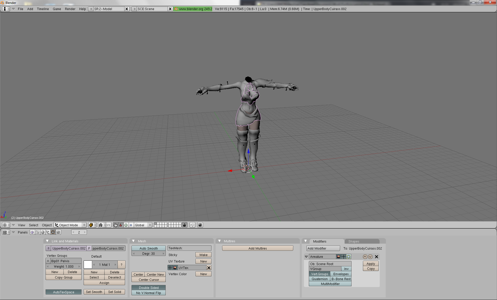

Modelling
I first became familiar with using Blender in my Freshman year here at Stony Brook University. Beforehand I had heard of and briefly used Blender in order to tweak and convert NIF formatted models between the different Bethesda games of the time.

However, after my experience in one of my early classes, ITS 102, and the discovery of Garry's Mod, I took a greater interest in learning how to use Blender.
Now, with over three years of experience of Blender, I have been able to swiftly make new meshes, rig unweighted models, and export many unique models to formats such as .smd, .obj, .xps, .mmd, and .nif.